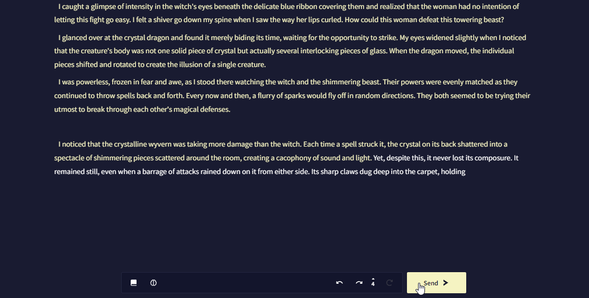
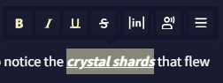
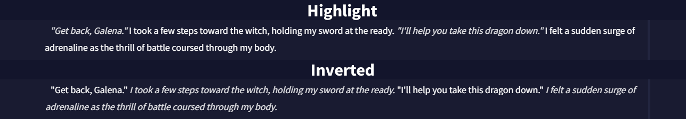
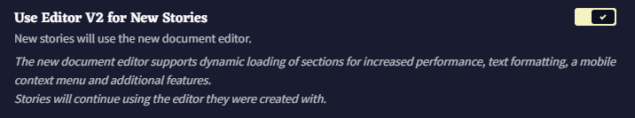

Editor
Editor는 NovelAI에서 스토리를 작성할 때 상호작용하게 될 인터페이스의 주요 섹션입니다. 먼저 Editor에서 직접 글을 쓴 다음 Send > 버튼이나 Ctrl + Enter (맥에서는 ⌘Command + Enter) 를 누르면 AI가 생성을 시작합니다.
모든 AI 생성과 사용자 입력은 분기되는 타임라인처럼 Edit History에 저장됩니다.  Undo 버튼을 누르면 타임라인에서 한 스텝 뒤로 가고, Redo는 한스텝 앞으로 갑니다.
Undo 버튼을 누르면 타임라인에서 한 스텝 뒤로 가고, Redo는 한스텝 앞으로 갑니다.

 Retry나 Alt + r (맥에서는 ⌥Option + r) 를 누르면 마지막 AI 생성을 다시 보내서 매변 완전히 새로운 AI 출력물을 제공합니다.
Retry나 Alt + r (맥에서는 ⌥Option + r) 를 누르면 마지막 AI 생성을 다시 보내서 매변 완전히 새로운 AI 출력물을 제공합니다.
History 버튼은 스토리의 현재 지점에서의 AI 생성의 수를 표시하고 어떤 것에 계속 이어 쓸지 선택할 수 있습니다.

Editor는 스토리에서의 글의 소스를 보여주기 위해 다양한 색상을 사용합니다.
- 초기 프롬프트는 크림색으로 표시됩니다. AI 생성 이전에 처음으로 작성된 것입니다.
- AI가 생성한 글은 흰색으로 표시됩니다.
- 유저가 수정한 것은 분홍색으로 표시되며, AI가 생성한 글에서 유저가 수정한 내용을 나타냅니다.
- 유저 입력은 파란색으로 표시되며, Editor에서 당신이 직접 작성한 글을 나타냅니다.
이 색상들은 기본 "NovelAI Dark" 테마에 해당하며  User Settings의 테마탭에서 수정할 수 있습니다.
User Settings의 테마탭에서 수정할 수 있습니다.
Title
Editor 최상단에는 현재 스토리의 제목이 있습니다. 이것은 단지 관리적인 목적일 뿐이며 AI에는 영향을 미치지 않습니다.
 Title Generation 버튼은 스토리의 내용을 기반으로 창의적인 제목을 만들어냅니다 - AI가 어떤 제목을 만들지는 알 수 없습니다!
Title Generation 버튼은 스토리의 내용을 기반으로 창의적인 제목을 만들어냅니다 - AI가 어떤 제목을 만들지는 알 수 없습니다!
제목을 만든 후에는,  Title Generation History 버튼을 눌러 뒤로 돌아가거나 AI가 만들어낸 제목의 마지막 50개 중에 선택할 수 있습니다. Note: Title Generation History는 현재 세션에서만 적용이 되며 NovelAI가 닫히면 지워집니다.
Title Generation History 버튼을 눌러 뒤로 돌아가거나 AI가 만들어낸 제목의 마지막 50개 중에 선택할 수 있습니다. Note: Title Generation History는 현재 세션에서만 적용이 되며 NovelAI가 닫히면 지워집니다.
Hypebot

Hypebot은 이야기에 코멘트를 달고 이야기를 진행하는데 때떄로 도움을 주는 AI 동반자입니다!
User Settings에서 사용된 초상화나 기타 설정을 바꿀 수 있습니다.
Goose tip: Hypebot의 위트있는 코멘트가 마음에 들지 않나요?
Input Box
Input Box는 Editor에 글을 작성하는 대신, 스토리에 글을 추가할 수 있는 대체 방법입니다. input box는 기본적으로는 꺼져 있지만 User Settings의 인터페이스 탭에서 활성화할 수 있습니다.
Note: Input box는 Editor V2에서는 사용할 수 없습니다.

Inline Generation
스토리의 이전 지점을 클릭하고 Shift + Enter를 누르면 AI는 두 방향의 텍스트를 고려하여 두 지점 사이의 입력을 생성하는 특수한 모델을 사용하게 됩니다.
Context Menu

마우스 오른쪽 버튼을 클릭하면 선택한 글과 상호작용할 수 있는 바로바기로 채워진 특수한 컨텐스트 메뉴를 불러옵니다. 이 바로가기들은 선택한 텍스트를 로어북에 빠르게 추가하는 것부터, 더 많은 로어를 생성하기 위한 입력으로 사용하거나, 이야기의 스크린샷을 찍거나, TTS를 사용하여 글을 읽게 하는 것까지 다양합니다.
엠-대시(—)나 애스터리즘(⁂) 등의 특수 문자를 추가하는 바로가기도 있습니다.
Screenshot Designer
컨텍스트 메뉴는 스토리의 선택된 부분을 쉽게 스크린샷 찍을 수 있도록 해줍니다.
Screenshot Designer를 통해 가장 기억에 남는 장면, 인상적인 대사나 주요 플롯을 쉽게 캡쳐할 수 있습니다.

Token Probabilities
활성화되면, 모든 AI 생성은 응답에 대한 Token Probabilities를 반환하며, 버튼을 클릭하여 이를 확인할 수 있습니다.
토큰은 그 확률에 따라 색깔로 구분됩니다: Low-Medium-High
Token Probabilities은 AI가 글을 생성하는 동안 토큰을 얼마나 '자신있게' 선택하는지와 AI 생성 설정이 결과물에 얼마나 영향을 미치는지에 대한 측정을 제공합니다. 확률이 높은 토큰은 더 예측 가능한 선택을 나타내고 확률이 낮은 토큰은 덜 관습적이거나 위험한 선택임을 드러내는 신호입니다.

Token Probabilities은 기본적으로 꺼져 있으며 Token Probabilities을 켜기 위해서는 User Settings의 AI 세팅 탭으로 가서 Enable Token Probabilities를 클릭하십시오.

Editor Token Probabilities
이 고급 사용자용 기능을 사용하면, Editor 자체에서 최근 AI 생성에 대한 토큰 선택을 볼 수 있습니다.
Editor Token Probabilities을 통해, 당신은 직접 작성할 필요없이 즉석에서 쉽게 AI를 올바른 방향으로 조정할 수 있습니다.

Editor Token Probabilities을 켜기 위해서는, User Settings의 AI 세팅 탭으로 가서 Enable Token Probabilities와 Editor Token Probabilities를 활성화하십시오.

Editor Token Probabilities는 Editor V2를 사용한 스토리에서만 가능합니다.
Text Formatting
Editor V2에서 배타적으로 글꼴 서식을 지정할 수 있습니다: 기울임, 굵게, 밑줄 그리고 취소선. 글자를 선택하고 서식 버튼을 누르거나 Ctrl+i (기울임), Ctrl+b (굵게), Ctrl+u (밑줄) 그리고 Ctrl+d (취소선)으로 같은 작업을 수행할 수 있습니다.

이것은 순수하게 시각적인 효과이며 AI는 서식이 지정된 글자와 보통 글자 사이의 다른 점을 보지 못한다는 사실을 염두에 두십시오.
Highlight Speech
이 옵션을 활성화하면 따옴표 사이의 글이 에디터에서 강조됩니다. 반대로, 이 옵션을 Inverted하면 따옴표 밖의 글이 강조됩니다.
이 옵션을 켜기 위해서는 User Settings의 인터페이스 탭으로 가서 Highlight Speech options 중의 하나를 선택하세요. (Editor V2에서만 가능)

.ProseMirror .dialogue { color: rgb(254,249,205); }
Editor V2
Editor V2는 기존의 텍스트 에디터의 개선판으로, 모바일 기기에서의 향상된 성능과 접근성을 위해 처음부터 만들어졌습니다.
Editor V2의 주요 특징은 다음과 같습니다:
- 자동, 그리고 수정 텍스트 포매팅.
- 긴 이야기에서 더 나은 성능을 위한 스토리 섹션의 다이내믹 로딩.
- 텍스트 포매팅과 다른 옵션에 빠르게 접근할 수 있는 에디터 도구상자.
- 텍스트 출처의 실시간 감지
- 히스토리 트리의 실행 취소/다시 실행 통합
- Editor를 떠나지 않고 이야기 저장하는 기능
- 모바일에서의 컨텍스트 메뉴
- Editor Token Probabilities 지원
- 더 쉬워진 지시 입력
기본적으로 Editor V2은 모든 사용자에 대해 켜져 있습니다. 여러 이유로 구버전 에디터로 돌아가고 싶다면, User Settings의 인터페이스 탭에 가서 Use Editor V2 for New Stories를 끌 수 있습니다.
장래에 Editor V2가 구버전 에디터를 완전하게 대체할 거라는 것을 명심하십시오.

Editor V1에서 만든 이야기를 V2로 변환하기 위해서는 라이브러리 사이드바의 Story Settings을 열고 Download Backup and Convert을 클릭하십시오.

Editor V2를 사용하는 스토리는 라이브러리 사이드바의 클립 아이콘으로 확인할 수 있습니다.